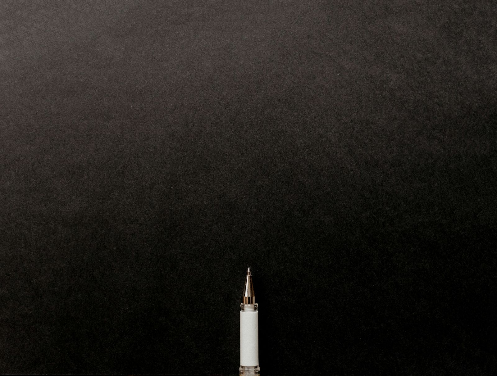
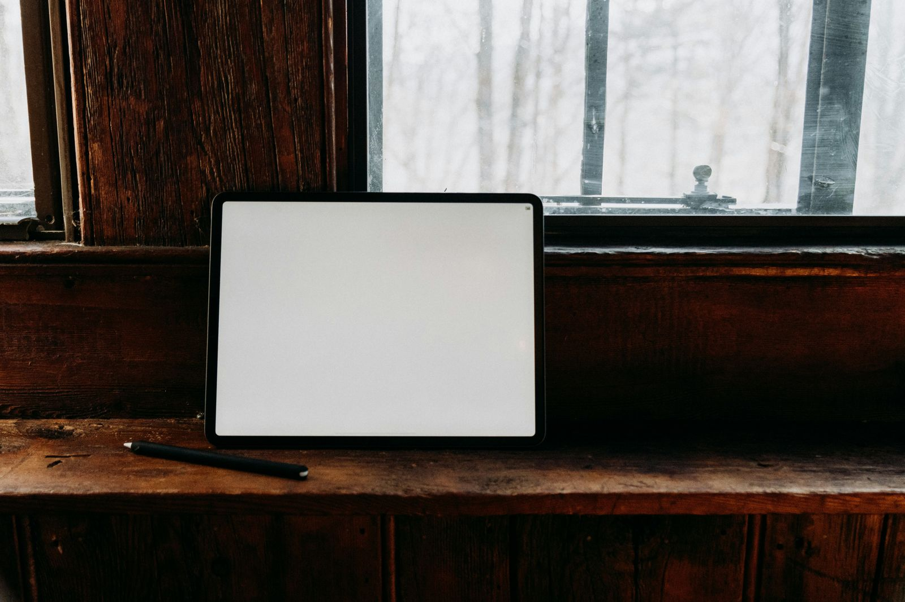

01
01Platform · 2026
RTOPilot
Compliance software for registered training organisations. A logged-in product surface, not a brochure with a login button.
Component lab · 02 / Cards
A grid of six identical boxes says all six matter the same, which is almost never true. Each of these solves the same problem differently: let one thing hold the floor without hiding the other five.
Cards 01 · Highlight carousel
A horizontal accordion. The open panel takes four and a half times the space; the rest stand edge-on with their titles set vertically. It advances itself until somebody takes it over, and then it stops for good rather than fighting them.
Cards 02 · Throw deck
Drag the top card and it follows the pointer. Release past the threshold and it keeps the direction it was thrown in, rather than snapping to an axis — which is the whole difference between a deck and a slideshow.
01Compliance software for registered training organisations. A logged-in product surface, not a brochure with a login button.
 02
02Six brands, one publishing spine, and a search footprint big enough that a migration had to be surgical.

03Every build starts on paper, and most of the decisions that matter are made before anything is in a browser.
 04
04Personal alarm monitoring for tens of thousands of Australians. The call-to-action has to work under stress.
-p-800.png) 05
05Regional tourism, sequenced to sell a drive rather than a destination.
Cards 03 · Bento morph
The track list is the only thing animating — the hovered column and row take the space and the others give it up. Nothing inside a cell is transformed, so the photographs stay sharp the whole way through.
Cards 04 · Scroll stack
Each card arrives, holds the centre, then recedes under the next.
The whole sequence is scrubbed from one value, so it runs backwards as cleanly as
forwards — and it does not use position: sticky, which cannot work
under a transform-based smooth scroll.
Before a wireframe exists we agree what the site is for in numbers — leads, bookings, applications. Everything after this is measured against it.

01Information architecture and search intent settled at wireframe. Retrofitting this after launch is where most rebuilds lose their traffic.
02Smooth scroll, scroll-linked timelines, character-level type reveals, and one WebGL moment that carries the page. Real HTML underneath, so the search work survives.
03Hosting, monitoring, Core Web Vitals watched rather than reported. Most of what we fix, clients never hear about — which is the point.
04Cards 05 · Tilt grid
Rotation tracks the pointer, the highlight stays underneath it rather than sweeping on a timer, and the copy sits on its own plane forty-six pixels above the art — so it separates as the card turns instead of sliding across it.
Keep going
Testimonials are the section everybody skips. Five attempts at making them worth stopping for.